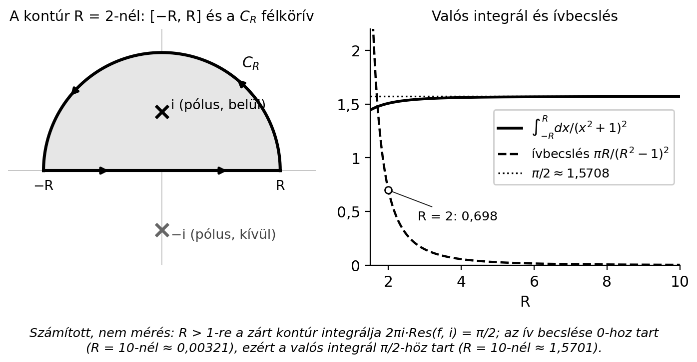

XI. RÉSZ – Záróprojektek és összefoglalás › 40 Összefoglalás és vizsgafelkészítés
Vegyes vizsgafeladatsor II.:
többváltozós, komplex analízis és differenciálegyenletek
A vizsga felépítése és a
pontozás
Ez az alfejezet két teljes, 90 perces, vegyes vizsgafeladatsort
tartalmaz a VII–X. rész anyagából. Mindkét változat 9 feladatból áll,
összesen 100 pontért. A feladatok a többváltozós differenciálszámítás, a
többes integrál, a vektoranalízis, a komplex analízis és a
differenciálegyenletek legfontosabb számolási és elméleti eszközeit
kérdezik számon.
A feladatsort érdemes először időre, önállóan megoldani. A
megoldásokban a pontozás is szerepel: vizsgán a jól indokolt részpontok
gyakran döntőek. A számításoknál mindig írd ki, melyik tételt vagy
formulát használod, mert puszta végeredményre szinte soha nem jár teljes
pont.
A feladatsor (90 perc, 100
pont)
A1. (8 pont) f ( x , y ) = x 2 + 3 y 2 − 2 x y + 1 f(x,y)=x^2+3y^2-2xy+1
Adja meg a
∇ f ( 1 , − 1 ) \nabla f(1,-1)
Számítsa ki az
𝐞 = 1 2 ( 1 , 1 ) \mathbf{e}=\frac{1}{\sqrt{2}}(1,1) ( 1 , − 1 ) (1,-1)
Írja fel a
z = f ( x , y ) z=f(x,y) ( 1 , − 1 , f ( 1 , − 1 ) ) (1,-1,f(1,-1))
A2. (10 pont) f ( x , y ) = x + 2 y f(x,y)=x+2y x 2 + y 2 = 5 x^2+y^2=5
A3. (10 pont)
∬ D ( x 2 + y 2 ) d A
\iint_D (x^2+y^2)\,dA
integrált, ahol
D = { ( x , y ) : x 2 + y 2 ≤ 4 , y ≥ 0 } .
D=\{(x,y): x^2+y^2\le 4,\ y\ge 0\}.
A4. (10 pont) 𝐅 ( x , y ) = ( 2 x y , x 2 + 1 ) \mathbf{F}(x,y)=(2xy,\;x^2+1)
Igazolja, hogy
𝐅 \mathbf{F}
Határozza meg azt az
f f f ( 0 , 0 ) = 0 f(0,0)=0
Számítsa ki az
∫ γ 𝐅 ⋅ d 𝐫 \displaystyle\int_\gamma \mathbf{F}\cdot d\mathbf{r} γ \gamma ( 0 , 0 ) (0,0) ( 1 , 2 ) (1,2) y = 2 x y=2x
A5. (12 pont)
∮ C ( x 2 y ) d x + ( x − y 2 ) d y
\oint_C (x^2y)\,dx+(x-y^2)\,dy
körintegrált, ahol
C C 0 ≤ x ≤ 1 0\le x\le 1 0 ≤ y ≤ 1 0\le y\le 1
A6. (14 pont)
∮ | z | = 2 e z ( z − 1 ) 2 d z
\oint_{|z|=2}\frac{e^z}{(z-1)^2}\,dz
integrált.
A7. (14 pont)
∫ − ∞ ∞ d x ( x 2 + 1 ) 2 = π 2 .
\int_{-\infty}^{\infty}\frac{dx}{(x^2+1)^2}=\frac{\pi}{2}.
A8. (14 pont)
y ″ − 5 y ′ + 6 y = e 2 x , y ( 0 ) = 1 , y ′ ( 0 ) = 0 .
y''-5y'+6y=e^{2x},\qquad y(0)=1,\quad y'(0)=0.
A9. (8 pont)
y ″ + 4 y = 4 e − t , y ( 0 ) = 0 , y ′ ( 0 ) = 0 .
y''+4y=4e^{-t},\qquad y(0)=0,\quad y'(0)=0.
B feladatsor (90 perc, 100
pont)
B1. (8 pont) f ( x , y ) = x 2 + y 2 + x y f(x,y)=x^2+y^2+xy
Adja meg a
∇ f ( 1 , 2 ) \nabla f(1,2)
Számítsa ki az iránymenti deriváltat a
𝐯 = 1 5 ( − 1 , 2 ) \mathbf{v}=\frac{1}{\sqrt{5}}(-1,2) ( 1 , 2 ) (1,2)
Írja fel a
z = f ( x , y ) z=f(x,y) ( 1 , 2 , 7 ) (1,2,7)
B2. (10 pont) f ( x , y ) = x y f(x,y)=xy
x 2 4 + y 2 9 = 1
\frac{x^2}{4}+\frac{y^2}{9}=1
ellipszisen.
B3. (10 pont)
∬ D x 2 + y 2 d A
\iint_D \sqrt{x^2+y^2}\,dA
integrált, ahol
D D 1 ≤ x 2 + y 2 ≤ 4 1\le x^2+y^2\le 4
B4. (10 pont) 𝐅 ( x , y ) = ( 3 x 2 y , x 3 + 2 y ) \mathbf{F}(x,y)=(3x^2y,\;x^3+2y)
Igazolja, hogy
𝐅 \mathbf{F}
Határozza meg azt az
f f f ( 1 , 0 ) = 0 f(1,0)=0
Számítsa ki az
∫ γ 𝐅 ⋅ d 𝐫 \displaystyle\int_\gamma \mathbf{F}\cdot d\mathbf{r} γ \gamma ( 1 , 0 ) (1,0) ( 2 , 2 ) (2,2) y = 2 x − 2 y=2x-2
B5. (12 pont)
𝐅 ( x , y , z ) = ( x 3 , y 3 , z 3 )
\mathbf{F}(x,y,z)=(x^3,\;y^3,\;z^3)
vektormező fluxusát az
x 2 + y 2 + z 2 = R 2 x^2+y^2+z^2=R^2
B6. (14 pont)
∮ | z | = 3 e 2 z z 2 + 1 d z
\oint_{|z|=3}\frac{e^{2z}}{z^2+1}\,dz
integrált.
B7. (14 pont) z = e i θ z=e^{i\theta}
∫ 0 2 π d θ 5 + 3 cos θ .
\int_0^{2\pi}\frac{d\theta}{5+3\cos\theta}.
B8. (14 pont)
x ′ = 4 x − 2 y , y ′ = 2 x , x ( 0 ) = 1 , y ( 0 ) = 2
x'=4x-2y,\qquad y'=2x,\qquad x(0)=1,\quad y(0)=2
lineáris differenciálegyenlet-rendszert, és jellemezze a
( 0 , 0 ) (0,0)
B9. (8 pont)
u t = 4 u x x ( 0 < x < π , t > 0 ) , u ( 0 , t ) = u ( π , t ) = 0 , u ( x , 0 ) = 3 sin 2 x .
u_t=4u_{xx}\quad (0<x<\pi,\ t>0),\qquad u(0,t)=u(\pi,t)=0,\qquad u(x,0)=3\sin 2x.
Megoldások és pontozási
útmutató
A1. megoldás (8 pont)
A parciális deriváltak:
f x ( x , y ) = 2 x − 2 y , f y ( x , y ) = 6 y − 2 x .
f_x(x,y)=2x-2y,\qquad f_y(x,y)=6y-2x.
A
( 1 , − 1 ) (1,-1)
f x ( 1 , − 1 ) = 2 + 2 = 4 , f y ( 1 , − 1 ) = − 6 − 2 = − 8 ,
f_x(1,-1)=2+2=4,\qquad f_y(1,-1)=-6-2=-8,
tehát
∇ f ( 1 , − 1 ) = ( 4 , − 8 ) .
\nabla f(1,-1)=(4,-8).
Pontozás:
f x f_x f y f_y (3 pont)
Mivel
| 𝐞 | = 1 |\mathbf{e}|=1
∂ 𝐞 f ( 1 , − 1 ) = ∇ f ( 1 , − 1 ) ⋅ 𝐞 = ( 4 , − 8 ) ⋅ 1 2 ( 1 , 1 ) = 4 − 8 2 = − 4 2 = − 2 2 .
\partial_{\mathbf{e}}f(1,-1)=\nabla f(1,-1)\cdot \mathbf{e}
=(4,-8)\cdot \frac{1}{\sqrt{2}}(1,1)
=\frac{4-8}{\sqrt{2}}
=-\frac{4}{\sqrt{2}}
=-2\sqrt{2}.
Pontozás: képlet 1 pont, számolás 1 pont. (2
pont)
f ( 1 , − 1 ) = 1 + 3 + 2 + 1 = 7 f(1,-1)=1+3+2+1=7
z − 7 = 4 ( x − 1 ) − 8 ( y + 1 ) .
z-7=4(x-1)-8(y+1).
Átrendezve:
z = 4 x − 8 y − 5 .
z=4x-8y-5.
Pontozás:
f ( 1 , − 1 ) f(1,-1) (3
pont)
A2. megoldás (10
pont)
Legyen
g ( x , y ) = x 2 + y 2 − 5 g(x,y)=x^2+y^2-5
∇ f = λ ∇ g ,
\nabla f=\lambda \nabla g,
azaz
( 1 , 2 ) = λ ( 2 x , 2 y ) .
(1,2)=\lambda(2x,2y).
Ebből
1 = 2 λ x , 2 = 2 λ y .
1=2\lambda x,\qquad 2=2\lambda y.
A második egyenletből
1 = λ y 1=\lambda y λ x = 1 2 \lambda x=\frac12 y = 2 x y=2x
x 2 + ( 2 x ) 2 = 5 ,
x^2+(2x)^2=5,
5 x 2 = 5 ,
5x^2=5,
x = ± 1 .
x=\pm 1.
Így a kritikus pontok:
( 1 , 2 ) , ( − 1 , − 2 ) .
(1,2),\qquad (-1,-2).
A függvényértékek:
f ( 1 , 2 ) = 1 + 4 = 5 , f ( − 1 , − 2 ) = − 1 − 4 = − 5 .
f(1,2)=1+4=5,\qquad f(-1,-2)=-1-4=-5.
Mivel a körvonal korlátos és zárt, a folytonos
f f 5 5 − 5 -5
Pontozás: Lagrange-egyenletek 4 pont, pontok
meghatározása 3 pont, maximum/minimum indoklás és értékek 3 pont.
(10 pont)
A3. megoldás (10
pont)
A
D D 2 2
0 ≤ r ≤ 2 , 0 ≤ φ ≤ π .
0\le r\le 2,\qquad 0\le \varphi\le \pi.
Az integrandus
x 2 + y 2 = r 2 x^2+y^2=r^2 r r d A = r d r d φ dA=r\,dr\,d\varphi
∬ D ( x 2 + y 2 ) d A = ∫ 0 π ∫ 0 2 r 2 ⋅ r d r d φ = ∫ 0 π d φ ∫ 0 2 r 3 d r .
\iint_D (x^2+y^2)\,dA
=\int_0^\pi\int_0^2 r^2\cdot r\,dr\,d\varphi
=\int_0^\pi d\varphi \int_0^2 r^3\,dr.
A belső integrál:
∫ 0 2 r 3 d r = [ r 4 4 ] 0 2 = 4 ,
\int_0^2 r^3\,dr=\left[\frac{r^4}{4}\right]_0^2=4,
a külső integrál értéke
π \pi
∬ D ( x 2 + y 2 ) d A = 4 π .
\iint_D (x^2+y^2)\,dA=4\pi.
Pontozás: polárkoordináták megadása 3 pont,
Jacobi-tag
r r (10 pont)
A4. megoldás (10
pont)
Legyen
𝐅 = ( P , Q ) \mathbf{F}=(P,Q) P = 2 x y P=2xy Q = x 2 + 1 Q=x^2+1 ℝ 2 \mathbb{R}^2
∂ P ∂ y = 2 x = ∂ Q ∂ x .
\frac{\partial P}{\partial y}=2x=\frac{\partial Q}{\partial x}.
Mivel
ℝ 2 \mathbb{R}^2 𝐅 \mathbf{F}
Pontozás: parciális deriváltak 1-1 pont, konklúzió 1
pont. (3 pont)
Keressük
f f ∇ f = 𝐅 \nabla f=\mathbf{F} f x = 2 x y f_x=2xy
f ( x , y ) = x 2 y + g ( y ) .
f(x,y)=x^2y+g(y).
Ekkor
f y = x 2 + g ′ ( y ) = x 2 + 1 ,
f_y=x^2+g'(y)=x^2+1,
tehát
g ′ ( y ) = 1 g'(y)=1 g ( y ) = y + C g(y)=y+C
f ( x , y ) = x 2 y + y + C .
f(x,y)=x^2y+y+C.
Az
f ( 0 , 0 ) = 0 f(0,0)=0 C = 0 C=0
f ( x , y ) = x 2 y + y .
f(x,y)=x^2y+y.
Pontozás:
f x f_x g g (4 pont)
Konzervatív mezőben a vonalintegrál útfüggetlen:
∫ γ 𝐅 ⋅ d 𝐫 = f ( 1 , 2 ) − f ( 0 , 0 ) = ( 1 2 ⋅ 2 + 2 ) − 0 = 4 .
\int_\gamma \mathbf{F}\cdot d\mathbf{r}
=f(1,2)-f(0,0)
=(1^2\cdot 2+2)-0
=4.
Pontozás: potenciálkülönbség gondolata 2 pont,
számolás 1 pont. (3 pont)
A5. megoldás (12
pont)
Legyen
P = x 2 y P=x^2y Q = x − y 2 Q=x-y^2
∂ Q ∂ x = 1 , ∂ P ∂ y = x 2 .
\frac{\partial Q}{\partial x}=1,\qquad \frac{\partial P}{\partial y}=x^2.
A Green-tétel szerint
∮ C P d x + Q d y = ∬ D ( ∂ Q ∂ x − ∂ P ∂ y ) d A = ∫ 0 1 ∫ 0 1 ( 1 − x 2 ) d x d y .
\oint_C P\,dx+Q\,dy
=\iint_D\left(\frac{\partial Q}{\partial x}-\frac{\partial P}{\partial y}\right)dA
=\int_0^1\int_0^1(1-x^2)\,dx\,dy.
A belső integrál:
∫ 0 1 ( 1 − x 2 ) d x = [ x − x 3 3 ] 0 1 = 1 − 1 3 = 2 3 .
\int_0^1(1-x^2)\,dx
=\left[x-\frac{x^3}{3}\right]_0^1
=1-\frac13=\frac23.
A külső integrál
∫ 0 1 2 3 d y = 2 3 \int_0^1\frac23\,dy=\frac23
∮ C ( x 2 y ) d x + ( x − y 2 ) d y = 2 3 .
\oint_C (x^2y)\,dx+(x-y^2)\,dy=\frac23.
Pontozás:
P P Q Q (12 pont)
A6. megoldás (14
pont)
A Cauchy-féle integrálformula deriváltakra vonatkozó alakja szerint,
ha
f f a a
f ( n ) ( a ) = n ! 2 π i ∮ f ( z ) ( z − a ) n + 1 d z .
f^{(n)}(a)=\frac{n!}{2\pi i}\oint \frac{f(z)}{(z-a)^{n+1}}\,dz.
Itt
a = 1 a=1 n = 1 n=1 f ( z ) = e z f(z)=e^z
∮ | z | = 2 e z ( z − 1 ) 2 d z = 2 π i f ′ ( 1 ) .
\oint_{|z|=2}\frac{e^z}{(z-1)^2}\,dz
=2\pi i f'(1).
Mivel
f ′ ( z ) = e z f'(z)=e^z f ′ ( 1 ) = e f'(1)=e
∮ | z | = 2 e z ( z − 1 ) 2 d z = 2 π i e .
\oint_{|z|=2}\frac{e^z}{(z-1)^2}\,dz=2\pi i e.
Pontozás: Cauchy-formula azonosítása 6 pont,
f ′ f' (14 pont)
A7. megoldás (14
pont)
Tekintsük az
f ( z ) = 1 ( z 2 + 1 ) 2 = 1 ( z − i ) 2 ( z + i ) 2
f(z)=\frac{1}{(z^2+1)^2}=\frac{1}{(z-i)^2(z+i)^2}
függvényt. Az
R R C R C_R [ − R , R ] [-R,R] Γ R \Gamma_R R > 1 R>1
∮ Γ R f ( z ) d z = 2 π i Res ( f , i ) ,
\oint_{\Gamma_R}f(z)\,dz=2\pi i\,\operatorname{Res}(f,i),
mert a felső félsíkban csak a
z = i z=i

Statikus változat (mint a PDF-ben) A7: a félkörkontúr
([ − R , R ] [-R, R] C R C_R i i − i -i π R / ( R 2 − 1 ) 2 \pi R/(R^2 - 1)^2 R R
A
z = i z=i
Res ( f , i ) = lim z → i d d z ( ( z − i ) 2 f ( z ) ) = lim z → i d d z 1 ( z + i ) 2 .
\operatorname{Res}(f,i)
=\lim_{z\to i}\frac{d}{dz}\Big((z-i)^2f(z)\Big)
=\lim_{z\to i}\frac{d}{dz}\frac{1}{(z+i)^2}.
A derivált:
d d z ( z + i ) − 2 = − 2 ( z + i ) − 3 ,
\frac{d}{dz}(z+i)^{-2}=-2(z+i)^{-3},
tehát
Res ( f , i ) = − 2 ( 2 i ) 3 = − 2 − 8 i = 1 4 i .
\operatorname{Res}(f,i)=-\frac{2}{(2i)^3}
=-\frac{2}{-8i}
=\frac{1}{4i}.
A
C R C_R | z 2 + 1 | ≥ | z | 2 − 1 = R 2 − 1 |z^2+1|\ge |z|^2-1=R^2-1 | f ( z ) | ≤ 1 ( R 2 − 1 ) 2 |f(z)|\le \frac{1}{(R^2-1)^2} π R \pi R
| ∫ C R f ( z ) d z | ≤ π R ( R 2 − 1 ) 2 → 0 ,
\left|\int_{C_R}f(z)\,dz\right|
\le \frac{\pi R}{(R^2-1)^2}\to 0,
amint
R → ∞ R\to\infty
∫ − ∞ ∞ d x ( x 2 + 1 ) 2 = 2 π i ⋅ 1 4 i = π 2 .
\int_{-\infty}^{\infty}\frac{dx}{(x^2+1)^2}
=2\pi i\cdot \frac{1}{4i}
=\frac{\pi}{2}.
Pontozás: felső félkör választása és pólus
azonosítása 3 pont, reziduum kiszámítása 6 pont, ívbecslés 3 pont,
végeredmény 2 pont. (14 pont)
A8. megoldás (14
pont)
A homogén egyenlet karakterisztikus polinomja:
λ 2 − 5 λ + 6 = ( λ − 2 ) ( λ − 3 ) = 0 ,
\lambda^2-5\lambda+6=(\lambda-2)(\lambda-3)=0,
tehát a homogén megoldás:
y h ( x ) = C 1 e 2 x + C 2 e 3 x .
y_h(x)=C_1e^{2x}+C_2e^{3x}.
Mivel
e 2 x e^{2x}
y p ( x ) = A x e 2 x
y_p(x)=Axe^{2x}
alakban keressük. Ekkor
y p ′ = A e 2 x + 2 A x e 2 x , y p ″ = 4 A e 2 x + 4 A x e 2 x .
y_p'=Ae^{2x}+2Axe^{2x},\qquad
y_p''=4Ae^{2x}+4Axe^{2x}.
Behelyettesítve:
y p ″ − 5 y p ′ + 6 y p = e 2 x [ A ( 4 + 4 x ) − 5 A ( 1 + 2 x ) + 6 A x ] .
y_p''-5y_p'+6y_p
=e^{2x}\Big[A(4+4x)-5A(1+2x)+6Ax\Big].
A szögletes zárójelben:
4 A + 4 A x − 5 A − 10 A x + 6 A x = − A ,
4A+4Ax-5A-10Ax+6Ax=-A,
ezért
y p ″ − 5 y p ′ + 6 y p = − A e 2 x .
y_p''-5y_p'+6y_p=-Ae^{2x}.
Ezt az
e 2 x e^{2x} − A = 1 -A=1 A = − 1 A=-1
y p ( x ) = − x e 2 x .
y_p(x)=-xe^{2x}.
Az általános megoldás:
y ( x ) = C 1 e 2 x + C 2 e 3 x − x e 2 x .
y(x)=C_1e^{2x}+C_2e^{3x}-xe^{2x}.
A kezdeti feltételekből:
y ( 0 ) = C 1 + C 2 = 1 ,
y(0)=C_1+C_2=1,
y ′ ( 0 ) = 2 C 1 + 3 C 2 − 1 = 0 .
y'(0)=2C_1+3C_2-1=0.
A második egyenletből
2 C 1 + 3 C 2 = 1 2C_1+3C_2=1 C 1 = 1 − C 2 C_1=1-C_2
2 ( 1 − C 2 ) + 3 C 2 = 1 ,
2(1-C_2)+3C_2=1,
2 + C 2 = 1 ,
2+C_2=1,
C 2 = − 1 , C 1 = 2 .
C_2=-1,\qquad C_1=2.
Tehát a kezdetiérték-feladat megoldása:
y ( x ) = ( 2 − x ) e 2 x − e 3 x .
y(x)=(2-x)e^{2x}-e^{3x}.
Ellenőrzés:
y ( 0 ) = 2 − 1 = 1 y(0)=2-1=1 y ′ ( 0 ) = 3 − 3 = 0 y'(0)=3-3=0
Pontozás: homogén megoldás 3 pont, partikuláris
megoldás alakja és meghatározása 6 pont, kezdeti feltételek 4 pont,
ellenőrzés 1 pont. (14 pont)
A9. megoldás (8 pont)
Jelölje
Y ( s ) = ℒ { y ( t ) } Y(s)=\mathcal{L}\{y(t)\}
ℒ { y ″ } = s 2 Y − s y ( 0 ) − y ′ ( 0 ) .
\mathcal{L}\{y''\}=s^2Y-sy(0)-y'(0).
Mivel
y ( 0 ) = y ′ ( 0 ) = 0 y(0)=y'(0)=0 ℒ { y ″ } = s 2 Y \mathcal{L}\{y''\}=s^2Y
s 2 Y + 4 Y = 4 s + 1 ,
s^2Y+4Y=\frac{4}{s+1},
ezért
Y ( s ) = 4 ( s + 1 ) ( s 2 + 4 ) .
Y(s)=\frac{4}{(s+1)(s^2+4)}.
Parciális törtekre bontva:
4 ( s + 1 ) ( s 2 + 4 ) = A s + 1 + B s + C s 2 + 4 .
\frac{4}{(s+1)(s^2+4)}
=\frac{A}{s+1}+\frac{Bs+C}{s^2+4}.
A számlálót összehasonlítva:
A = 4 5 , B = − 4 5 , C = 4 5 .
A=\frac45,\qquad B=-\frac45,\qquad C=\frac45.
Tehát
Y ( s ) = 4 5 1 s + 1 − 4 5 s s 2 + 4 + 4 5 1 s 2 + 4 .
Y(s)=\frac45\frac1{s+1}-\frac45\frac{s}{s^2+4}+\frac45\frac1{s^2+4}.
Az inverz transzformáció:
1 s + 1 → e − t , s s 2 + 4 → cos 2 t , 1 s 2 + 4 → 1 2 sin 2 t .
\frac1{s+1}\to e^{-t},\qquad
\frac{s}{s^2+4}\to \cos 2t,\qquad
\frac1{s^2+4}\to \frac12\sin 2t.
Így
y ( t ) = 4 5 e − t − 4 5 cos 2 t + 2 5 sin 2 t .
y(t)=\frac45e^{-t}-\frac45\cos 2t+\frac25\sin 2t.
Ellenőrzés:
y ( 0 ) = 4 5 − 4 5 = 0 y(0)=\frac45-\frac45=0
y ′ ( t ) = − 4 5 e − t + 8 5 sin 2 t + 4 5 cos 2 t ,
y'(t)=-\frac45e^{-t}+\frac85\sin 2t+\frac45\cos 2t,
így
y ′ ( 0 ) = − 4 5 + 4 5 = 0 y'(0)=-\frac45+\frac45=0
Pontozás: transzformált egyenlet 3 pont, parciális
törtek 2 pont, inverz transzformáció 2 pont, ellenőrzés 1 pont.
(8 pont)
B1. megoldás (8
pont)
A parciális deriváltak:
f x = 2 x + y , f y = 2 y + x ,
f_x=2x+y,\qquad f_y=2y+x,
így
∇ f ( 1 , 2 ) = ( 2 ⋅ 1 + 2 , 2 ⋅ 2 + 1 ) = ( 4 , 5 ) .
\nabla f(1,2)=(2\cdot 1+2,\;2\cdot 2+1)=(4,5).
Pontozás: gradiens felírása 2 pont. (2
pont)
Mivel
| 𝐯 | = 1 |\mathbf{v}|=1
∂ 𝐯 f ( 1 , 2 ) = ( 4 , 5 ) ⋅ 1 5 ( − 1 , 2 ) = − 4 + 10 5 = 6 5 .
\partial_{\mathbf{v}}f(1,2)=(4,5)\cdot \frac{1}{\sqrt{5}}(-1,2)
=\frac{-4+10}{\sqrt{5}}
=\frac{6}{\sqrt{5}}.
Pontozás: képlet 1 pont, számolás 1 pont. (2
pont)
f ( 1 , 2 ) = 1 + 4 + 2 = 7 f(1,2)=1+4+2=7
z − 7 = 4 ( x − 1 ) + 5 ( y − 2 ) ,
z-7=4(x-1)+5(y-2),
azaz
z = 4 x + 5 y − 7 .
z=4x+5y-7.
Pontozás: érintősík egyenletének felírása 4 pont.
(4 pont)
B2. megoldás (10
pont)
A feltételi függvény:
g ( x , y ) = x 2 4 + y 2 9 − 1 .
g(x,y)=\frac{x^2}{4}+\frac{y^2}{9}-1.
A Lagrange-feltétel:
∇ f = λ ∇ g ,
\nabla f=\lambda \nabla g,
azaz
( y , x ) = λ ( x 2 , 2 y 9 ) .
(y,x)=\lambda\left(\frac{x}{2},\frac{2y}{9}\right).
Ebből
y = λ x 2 , x = 2 λ y 9 .
y=\frac{\lambda x}{2},\qquad x=\frac{2\lambda y}{9}.
Az első egyenletből
λ = 2 y x \lambda=\frac{2y}{x} λ = 9 x 2 y \lambda=\frac{9x}{2y}
2 y x = 9 x 2 y ,
\frac{2y}{x}=\frac{9x}{2y},
4 y 2 = 9 x 2 ,
4y^2=9x^2,
y 2 = 9 4 x 2 .
y^2=\frac94 x^2.
Ezt a feltételi egyenletbe írva:
x 2 4 + 1 9 ⋅ 9 4 x 2 = 1 ,
\frac{x^2}{4}+\frac{1}{9}\cdot \frac94 x^2=1,
x 2 4 + x 2 4 = 1 ,
\frac{x^2}{4}+\frac{x^2}{4}=1,
x 2 = 2 ,
x^2=2,
tehát
x = ± 2 x=\pm\sqrt{2} y = ± 3 2 2 y=\pm\frac32\sqrt{2}
f ( 2 , 3 2 2 ) = 3 , f ( − 2 , − 3 2 2 ) = 3 ,
f(\sqrt{2},\frac32\sqrt{2})=3,\qquad
f(-\sqrt{2},-\frac32\sqrt{2})=3,
f ( 2 , − 3 2 2 ) = − 3 , f ( − 2 , 3 2 2 ) = − 3 .
f(\sqrt{2},-\frac32\sqrt{2})=-3,\qquad
f(-\sqrt{2},\frac32\sqrt{2})=-3.
Az ellipszis korlátos és zárt, ezért a maximum
3 3 − 3 -3
Pontozás: Lagrange-egyenletek 4 pont, pontok
meghatározása 3 pont, szélsőértékek azonosítása 3 pont. (10
pont)
B3. megoldás (10
pont)
A
D D 1 ≤ r ≤ 2 1\le r\le 2 0 ≤ φ ≤ π 2 0\le \varphi\le \frac{\pi}{2} x 2 + y 2 = r \sqrt{x^2+y^2}=r r r
∬ D x 2 + y 2 d A = ∫ 0 π / 2 ∫ 1 2 r ⋅ r d r d φ = ∫ 0 π / 2 d φ ∫ 1 2 r 2 d r .
\iint_D \sqrt{x^2+y^2}\,dA
=\int_0^{\pi/2}\int_1^2 r\cdot r\,dr\,d\varphi
=\int_0^{\pi/2}d\varphi\int_1^2 r^2\,dr.
A belső integrál:
∫ 1 2 r 2 d r = [ r 3 3 ] 1 2 = 8 − 1 3 = 7 3 .
\int_1^2 r^2\,dr=\left[\frac{r^3}{3}\right]_1^2
=\frac{8-1}{3}=\frac73.
A külső integrál
π 2 \frac{\pi}{2}
∬ D x 2 + y 2 d A = π 2 ⋅ 7 3 = 7 π 6 .
\iint_D \sqrt{x^2+y^2}\,dA=\frac{\pi}{2}\cdot\frac73=\frac{7\pi}{6}.
Pontozás: polárkoordináták 3 pont, Jacobi-tag 3
pont, integrálás 4 pont. (10 pont)
B4. megoldás (10
pont)
P = 3 x 2 y P=3x^2y Q = x 3 + 2 y Q=x^3+2y
∂ P ∂ y = 3 x 2 = ∂ Q ∂ x ,
\frac{\partial P}{\partial y}=3x^2=\frac{\partial Q}{\partial x},
és mivel a tartomány
ℝ 2 \mathbb{R}^2 𝐅 \mathbf{F}
Pontozás: parciális deriváltak 2 pont, következtetés
1 pont. (3 pont)
Az
f x = 3 x 2 y f_x=3x^2y
f ( x , y ) = x 3 y + g ( y ) .
f(x,y)=x^3y+g(y).
Ekkor
f y = x 3 + g ′ ( y ) = x 3 + 2 y ,
f_y=x^3+g'(y)=x^3+2y,
tehát
g ′ ( y ) = 2 y g'(y)=2y g ( y ) = y 2 + C g(y)=y^2+C
f ( x , y ) = x 3 y + y 2 + C .
f(x,y)=x^3y+y^2+C.
Az
f ( 1 , 0 ) = 0 f(1,0)=0 C = 0 C=0
f ( x , y ) = x 3 y + y 2 .
f(x,y)=x^3y+y^2.
Pontozás:
f x f_x g g (4 pont)
Konzervatív mezőben az integrál útfüggetlen:
∫ γ 𝐅 ⋅ d 𝐫 = f ( 2 , 2 ) − f ( 1 , 0 ) = ( 2 3 ⋅ 2 + 2 2 ) − 0 = 20 .
\int_\gamma \mathbf{F}\cdot d\mathbf{r}
=f(2,2)-f(1,0)
=(2^3\cdot 2+2^2)-0
=20.
Pontozás: potenciálkülönbség 2 pont, számolás 1
pont. (3 pont)
B5. megoldás (12
pont)
A Gauss–Osztrogradszkij-tétel szerint
∬ ∂ V 𝐅 ⋅ 𝐧 d S = ∭ V div 𝐅 d V .
\iint_{\partial V}\mathbf{F}\cdot\mathbf{n}\,dS
=\iiint_V \operatorname{div}\mathbf{F}\,dV.
Itt
div 𝐅 = ∂ ∂ x ( x 3 ) + ∂ ∂ y ( y 3 ) + ∂ ∂ z ( z 3 ) = 3 x 2 + 3 y 2 + 3 z 2 = 3 ( x 2 + y 2 + z 2 ) .
\operatorname{div}\mathbf{F}
=\frac{\partial}{\partial x}(x^3)+\frac{\partial}{\partial y}(y^3)+\frac{\partial}{\partial z}(z^3)
=3x^2+3y^2+3z^2=3(x^2+y^2+z^2).
Gömbkoordinátákban
x 2 + y 2 + z 2 = r 2 , d V = r 2 sin ϑ d r d ϑ d φ .
x^2+y^2+z^2=r^2,\qquad dV=r^2\sin\vartheta\,dr\,d\vartheta\,d\varphi.
Így
∬ ∂ V 𝐅 ⋅ 𝐧 d S = ∫ 0 2 π ∫ 0 π ∫ 0 R 3 r 2 ⋅ r 2 sin ϑ d r d ϑ d φ .
\iint_{\partial V}\mathbf{F}\cdot\mathbf{n}\,dS
=\int_0^{2\pi}\int_0^\pi\int_0^R 3r^2\cdot r^2\sin\vartheta\,dr\,d\vartheta\,d\varphi.
A szögváltozók integráljai:
∫ 0 2 π d φ = 2 π , ∫ 0 π sin ϑ d ϑ = 2 .
\int_0^{2\pi}d\varphi=2\pi,\qquad
\int_0^\pi \sin\vartheta\,d\vartheta=2.
A radiális integrál:
∫ 0 R 3 r 4 d r = 3 ⋅ R 5 5 .
\int_0^R 3r^4\,dr=3\cdot\frac{R^5}{5}.
Ezért a fluxus:
∬ ∂ V 𝐅 ⋅ 𝐧 d S = 2 π ⋅ 2 ⋅ 3 ⋅ R 5 5 = 12 π R 5 5 .
\iint_{\partial V}\mathbf{F}\cdot\mathbf{n}\,dS
=2\pi\cdot 2\cdot 3\cdot\frac{R^5}{5}
=\frac{12\pi R^5}{5}.
Pontozás: divergencia kiszámítása 3 pont,
gömbkoordinátás térfogatelem 3 pont, határok megadása 2 pont, integrálás
4 pont. (12 pont)
B6. megoldás (14
pont)
A nevezőt szorzattá alakítva:
z 2 + 1 = ( z − i ) ( z + i ) ,
z^2+1=(z-i)(z+i),
így
e 2 z z 2 + 1 = 1 2 i ( e 2 z z − i − e 2 z z + i ) .
\frac{e^{2z}}{z^2+1}
=\frac{1}{2i}\left(\frac{e^{2z}}{z-i}-\frac{e^{2z}}{z+i}\right).
A
| z | = 3 |z|=3 z = i z=i z = − i z=-i
∮ | z | = 3 e 2 z z − i d z = 2 π i e 2 i ,
\oint_{|z|=3}\frac{e^{2z}}{z-i}\,dz=2\pi i e^{2i},
és
∮ | z | = 3 e 2 z z + i d z = 2 π i e − 2 i .
\oint_{|z|=3}\frac{e^{2z}}{z+i}\,dz=2\pi i e^{-2i}.
Ezért
∮ | z | = 3 e 2 z z 2 + 1 d z = 1 2 i ( 2 π i e 2 i − 2 π i e − 2 i ) = π ( e 2 i − e − 2 i ) .
\oint_{|z|=3}\frac{e^{2z}}{z^2+1}\,dz
=\frac{1}{2i}\Big(2\pi i e^{2i}-2\pi i e^{-2i}\Big)
=\pi\big(e^{2i}-e^{-2i}\big).
Mivel
e 2 i − e − 2 i = 2 i sin 2 e^{2i}-e^{-2i}=2i\sin 2
∮ | z | = 3 e 2 z z 2 + 1 d z = 2 π i sin 2 .
\oint_{|z|=3}\frac{e^{2z}}{z^2+1}\,dz=2\pi i\sin 2.
Pontozás: parciális törtek 5 pont, Cauchy-formula
mindkét pólusra 5 pont, kombinálás és trigonometrikus alak 4 pont.
(14 pont)
B7. megoldás (14
pont)
A
z = e i θ z=e^{i\theta}
cos θ = z + z − 1 2 , d θ = d z i z .
\cos\theta=\frac{z+z^{-1}}{2},\qquad d\theta=\frac{dz}{iz}.
Az integrál:
∫ 0 2 π d θ 5 + 3 cos θ = ∮ | z | = 1 1 5 + 3 2 ( z + z − 1 ) ⋅ d z i z .
\int_0^{2\pi}\frac{d\theta}{5+3\cos\theta}
=\oint_{|z|=1}\frac{1}{5+\frac32(z+z^{-1})}\cdot\frac{dz}{iz}.
A nevezőt rendezve:
5 + 3 2 ( z + z − 1 ) = 10 + 3 z + 3 z − 1 2 = 3 z 2 + 10 z + 3 2 z .
5+\frac32(z+z^{-1})
=\frac{10+3z+3z^{-1}}{2}
=\frac{3z^2+10z+3}{2z}.
Ezért
∫ 0 2 π d θ 5 + 3 cos θ = 2 i ∮ | z | = 1 d z 3 z 2 + 10 z + 3 .
\int_0^{2\pi}\frac{d\theta}{5+3\cos\theta}
=\frac{2}{i}\oint_{|z|=1}\frac{dz}{3z^2+10z+3}.
A nevező szorzattá alakítva:
3 z 2 + 10 z + 3 = ( 3 z + 1 ) ( z + 3 ) .
3z^2+10z+3=(3z+1)(z+3).
A pólusok:
z = − 1 3 z=-\frac13 z = − 3 z=-3 z = − 1 3 z=-\frac13
Res ( 1 ( 3 z + 1 ) ( z + 3 ) , − 1 3 ) = lim z → − 1 3 ( z + 1 3 ) 1 ( 3 z + 1 ) ( z + 3 ) = 1 3 ( z + 3 ) | z = − 1 3 = 1 3 ⋅ 8 3 = 1 8 .
\operatorname{Res}\left(\frac1{(3z+1)(z+3)},-\frac13\right)
=\lim_{z\to -\frac13}\left(z+\frac13\right)\frac1{(3z+1)(z+3)}
=\frac{1}{3(z+3)}\bigg|_{z=-\frac13}
=\frac{1}{3\cdot \frac83}
=\frac18.
A reziduum-tételből:
∮ | z | = 1 d z 3 z 2 + 10 z + 3 = 2 π i ⋅ 1 8 = π i 4 .
\oint_{|z|=1}\frac{dz}{3z^2+10z+3}
=2\pi i\cdot\frac18=\frac{\pi i}{4}.
Így
∫ 0 2 π d θ 5 + 3 cos θ = 2 i ⋅ π i 4 = π 2 .
\int_0^{2\pi}\frac{d\theta}{5+3\cos\theta}
=\frac{2}{i}\cdot\frac{\pi i}{4}
=\frac{\pi}{2}.
Pontozás: helyettesítés és kontúrintegrál 5 pont,
pólusok azonosítása 3 pont, reziduum 4 pont, végeredmény 2 pont.
(14 pont)
B8. megoldás (14
pont)
A rendszer mátrixa:
𝐀 = ( 4 − 2 2 0 ) .
\mathbf{A}=\begin{pmatrix}4&-2\\2&0\end{pmatrix}.
A karakterisztikus polinom:
det ( 𝐀 − λ I ) = ∣ 4 − λ − 2 2 − λ ∣ = λ 2 − 4 λ + 4 = ( λ − 2 ) 2 .
\det(\mathbf{A}-\lambda I)
=\begin{vmatrix}4-\lambda&-2\\2&-\lambda\end{vmatrix}
=\lambda^2-4\lambda+4
=(\lambda-2)^2.
Tehát a
λ = 2 \lambda=2 ( 𝐀 − 2 𝐈 ) 𝐯 = 𝟎 (\mathbf{A}-2\mathbf{I})\mathbf{v}=\mathbf{0}
( 2 − 2 2 − 2 ) ( v 1 v 2 ) = ( 0 0 ) ,
\begin{pmatrix}2&-2\\2&-2\end{pmatrix}\begin{pmatrix}v_1\\v_2\end{pmatrix}
=\begin{pmatrix}0\\0\end{pmatrix},
amiből
v 1 = v 2 v_1=v_2
A megoldást eliminációval is megkaphatjuk:
y ′ = 2 x y'=2x x = 1 2 y ′ x=\frac12 y' x ′ = 1 2 y ″ x'=\frac12 y''
1 2 y ″ = 4 ⋅ 1 2 y ′ − 2 y ,
\frac12 y''=4\cdot \frac12 y'-2y,
y ″ = 4 y ′ − 4 y ,
y''=4y'-4y,
y ″ − 4 y ′ + 4 y = 0 .
y''-4y'+4y=0.
A karakterisztikus egyenlet ismét
( λ − 2 ) 2 = 0 (\lambda-2)^2=0
y ( t ) = ( C 1 + C 2 t ) e 2 t .
y(t)=(C_1+C_2t)e^{2t}.
Ekkor
x ( t ) = 1 2 y ′ ( t ) = 1 2 ( 2 C 1 e 2 t + C 2 e 2 t + 2 C 2 t e 2 t ) = ( C 1 + C 2 2 + C 2 t ) e 2 t .
x(t)=\frac12 y'(t)
=\frac12\Big(2C_1e^{2t}+C_2e^{2t}+2C_2te^{2t}\Big)
=\left(C_1+\frac{C_2}{2}+C_2t\right)e^{2t}.
A kezdeti feltételekből:
x ( 0 ) = C 1 + C 2 2 = 1 ,
x(0)=C_1+\frac{C_2}{2}=1,
y ( 0 ) = C 1 = 2 .
y(0)=C_1=2.
Ebből
C 1 = 2 C_1=2
2 + C 2 2 = 1 ,
2+\frac{C_2}{2}=1,
C 2 = − 2 .
C_2=-2.
Tehát
x ( t ) = ( 1 − 2 t ) e 2 t , y ( t ) = ( 2 − 2 t ) e 2 t .
x(t)=(1-2t)e^{2t},\qquad y(t)=(2-2t)e^{2t}.
Mivel a
λ = 2 \lambda=2 ( 0 , 0 ) (0,0) instabil elfajult csomó . A pályák a
v 1 = v 2 v_1=v_2 t → ∞ t\to\infty
Pontozás: karakterisztikus polinom 3 pont,
sajátvektor hiányosság felismerése 3 pont, differenciálegyenlet-megoldás
4 pont, kezdeti feltételek 3 pont, stabilitás osztályozása 1 pont.
(14 pont)
B9. megoldás (8
pont)
A hővezetési egyenlet megoldását a Parciális
differenciálegyenletek ízelítő: hővezetés, hullám, Laplace-egyenlet
alfejezetben megismert Fourier-módszerrel keressük. Az
L = π L=\pi sin ( n x ) \sin(nx) λ n = ( n π L ) 2 = n 2 \lambda_n = \left(\frac{n\pi}{L}\right)^2 = n^2 e − α λ n t = e − 4 n 2 t e^{-\alpha\lambda_n t} = e^{-4n^2 t}
A kezdeti feltétel:
u ( x , 0 ) = 3 sin 2 x ,
u(x,0)=3\sin 2x,
tehát csak az
n = 2 n=2
e − α λ 2 t = e − 4 ⋅ 4 t = e − 16 t .
e^{-\alpha \lambda_2 t}
=e^{-4\cdot 4t}
=e^{-16t}.
Így a megoldás:
u ( x , t ) = 3 e − 16 t sin 2 x .
u(x,t)=3e^{-16t}\sin 2x.
Ellenőrzés:
u ( 0 , t ) = 0 u(0,t)=0 u ( π , t ) = 3 e − 16 t sin 2 π = 0 u(\pi,t)=3e^{-16t}\sin 2\pi=0 u ( x , 0 ) = 3 sin 2 x u(x,0)=3\sin 2x u t = − 48 e − 16 t sin 2 x u_t=-48 e^{-16t}\sin 2x 4 u x x = 4 ⋅ 3 e − 16 t ( − 4 sin 2 x ) = − 48 e − 16 t sin 2 x 4u_{xx}=4\cdot 3e^{-16t}(-4\sin 2x)=-48 e^{-16t}\sin 2x
Pontozás: módus azonosítása 3 pont, csillapítási
kitevő 3 pont, általános alak és ellenőrzés 2 pont. (8
pont)
Tipikus hibák a vizsgán
A két feladatsor leggyakoribb hibái a korábbi alfejezetek tanulságait
ismétlik.
Elmaradt Jacobi-tag polárkoordinátánál. A
leggyakoribb hiba az
r r d A = r d r d φ dA=r\,dr\,d\varphi r r r r Polárkoordináták és a Gauss-integrál .
Lagrange-multiplikátornál hiányzik a korlátos zárt halmaz
indoklása. A Lagrange-egyenletek megoldása csak kritikus
pontokat ad; a maximum/minimum létezését a folytonosságra és a kompakt
feltételi halmazra hivatkozva kell kimondani. Visszautalás: Feltételes szélsőérték:
Lagrange-multiplikátor .
Cauchy-formulánál rossz derivált-rend. Az
( z − a ) n + 1 (z-a)^{n+1} f ( n ) ( a ) f^{(n)}(a) 2 π i n ! f ( n ) ( a ) \frac{2\pi i}{n!}f^{(n)}(a) n = 0 n=0 2 π i f ( a ) 2\pi i f(a) A Cauchy-féle
integrálformula .
Reziduumos valós integrálnál hiányzó ívbecslés.
A felső félkörön vett integrál eltűnését mindig meg kell mutatni,
különben a bizonyítás nem teljes. Másodrendű pólusnál a deriválás is
gyakran elmarad. Visszautalás: Valós integrálok
kiszámítása reziduumokkal .
Laplace-transzformációnál az
s y ( 0 ) sy(0) y ′ ( 0 ) y'(0) A második derivált transzformáltja
s 2 Y − s y ( 0 ) − y ′ ( 0 ) s^2Y-sy(0)-y'(0) s 2 Y s^2Y Kezdetiérték-feladatok
Laplace-transzformációval és az átviteli függvény .
A
t e λ t te^{\lambda t} Kétszeres
sajátérték esetén, ha csak egy független sajátvektor van, a
t e λ t te^{\lambda t} Lineáris
differenciálegyenlet-rendszerek és a fázissík .
Önellenőrzés
Írd fel emlékezetből az iránymenti derivált képletét, ha
| 𝐞 | = 1 |\mathbf{e}|=1
Mi a polárkoordinátás
d A dA
Mit mond ki a Cauchy-féle integrálformula a deriváltakra?
Mennyi a
div ( x 3 , y 3 , z 3 ) \operatorname{div}(x^3,y^3,z^3)
Milyen alakú a próbafüggvény, ha az
y ″ − 5 y ′ + 6 y = e 2 x y''-5y'+6y=e^{2x}
Önellenőrzés – válaszok
∂ 𝐞 f = ∇ f ⋅ 𝐞 \partial_{\mathbf{e}}f=\nabla f\cdot\mathbf{e} d A = r d r d φ dA=r\,dr\,d\varphi f ( n ) ( a ) = n ! 2 π i ∮ C f ( z ) ( z − a ) n + 1 d z f^{(n)}(a)=\frac{n!}{2\pi i}\oint_C\frac{f(z)}{(z-a)^{n+1}}\,dz 3 x 2 + 3 y 2 + 3 z 2 = 3 r 2 3x^2+3y^2+3z^2=3r^2 A x e 2 x Axe^{2x} e 2 x e^{2x}
Rövid összefoglaló
A fejezet két vizsgaszerű, 90 perces vegyes feladatsort adott a
többváltozós analízis, a vektoranalízis, a komplex analízis és a
differenciálegyenletek anyagából. Az A változatban a gradiens és
érintősík, a Lagrange-multiplikátor, a polárkoordinátás kettős integrál,
a konzervatív vektormező, a Green-tétel, a Cauchy-integrálformula, a
reziduum-tétel, a másodrendű állandó együtthatós egyenlet és a
Laplace-transzformáció szerepelt. A B változat ugyanezeket a technikákat
más példákon gyakoroltatta, emellett a Gauss–Osztrogradszkij-tételt, a
lineáris rendszerek fázisképét és a hővezetési egyenlet
Fourier-megoldását kérdezte. A pontozási útmutató azt mutatja meg, hogy
a részpontok a gondolatmenet indoklásáért járnak: a képletválasztás, a
helyettesítés, a tétel feltételeinek ellenőrzése és a végeredmény együtt
adja a teljes pontszámot. Továbbvitt eredmény: ez a
feladatsor lezárja a vizsgafelkészítést; a fogalmi térkép és a
továbblépési lehetőségek a Továbblépés: merre tovább
az analízisben? alfejezetben találhatók.